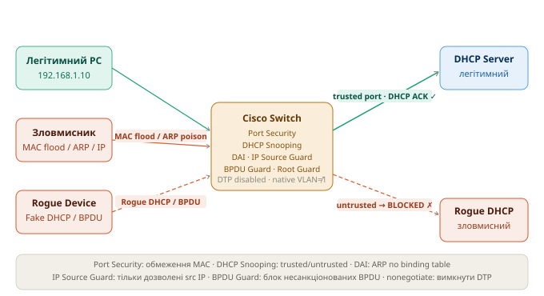

Захист канального рівня (L2 Security) - Шпаргалка
Курс: Безпека електронно-комунікаційних мереж | 3 курс
Загальна картина
Канальний рівень OSI (L2) - одне з найбільш вразливих місць корпоративної мережі. На відміну від L3 (IP), більшість комутаторів за замовчуванням довіряють будь-якому пристрою що підключився до порту. Це дозволяє зловмиснику маніпулювати MAC-таблицями, ARP-кешем, DHCP-відповідями та VLAN-ізоляцією
📁 Схема атак та захисних механізмів:

| Атака | Ціль | Захист |
|---|---|---|
| MAC Address Flooding | Переповнити MAC-таблицю → switch стає hub | Port Security |
| Rogue DHCP Server | Підмінити шлюз/DNS → MITM | DHCP Snooping |
| ARP Spoofing / Poisoning | Підмінити ARP → MITM / DoS | DAI (Dynamic ARP Inspection) |
| IP Spoofing | Підробити source IP → обхід ACL | IP Source Guard |
| STP Manipulation | Стати Root Bridge → перехоплення трафіку | BPDU Guard, Root Guard |
| VLAN Hopping | Отримати доступ до іншого VLAN | Вимкнення DTP, native VLAN |
1 Port Security - захист від MAC Flooding
1.1 Проблема
MAC Flooding: зловмисник генерує мільйони фреймів з підробленими MAC-адресами. Таблиця MAC-адрес комутатора (CAM table) переповнюється. Комутатор починає флудити весь вхідний трафік на всі порти - перетворюється на концентратор (hub). Зловмисник перехоплює трафік між легітимними хостами
Зловмисник → [MAC 11:11:11, MAC 22:22:22, MAC 33:33:33 ...] → SW
CAM table переповнена → SW флудить весь трафік → зловмисник бачить чужі дані
1.2 Що робить Port Security
Обмежує кількість MAC-адрес на порту та визначає дію при порушенні.
! Увімкнути Port Security на access-порту
interface GigabitEthernet1/0/1
switchport mode access
switchport access vlan 10
switchport port-security ! увімкнути
switchport port-security maximum 2 ! максимум 2 MAC на порту
switchport port-security violation restrict ! дія при порушенні
switchport port-security mac-address sticky ! автозапам'ятовування MAC
! Три режими violation:
! protect — відкидати фрейми з невідомих MAC, без логу, без shutdown
! restrict — відкидати + логувати + лічильник порушень
! shutdown — відключити порт (err-disabled) ← за замовчуванням
! Статично вказати дозволену MAC-адресу
interface GigabitEthernet1/0/1
switchport port-security mac-address 00A0.1234.5678
! Sticky — зберегти першу MAC що з'явилась (в running-config)
switchport port-security mac-address sticky
Sticky MAC та перезавантаження
sticky зберігає вивчені MAC у running-config. Щоб вони збереглись після перезавантаження - виконай copy running-config startup-config. Інакше після ребуту порт знову прийме будь-яку MAC
! Відновлення err-disabled порту
interface GigabitEthernet1/0/1
shutdown
no shutdown
! Або автоматичне відновлення (через N секунд)
errdisable recovery cause psecure-violation
errdisable recovery interval 300
! Перевірка
show port-security
show port-security interface GigabitEthernet1/0/1
show port-security address
1.3 Приклад виводу
Switch# show port-security interface GigabitEthernet1/0/1
Port Security : Enabled
Port Status : Secure-up
Violation Mode : Restrict
Aging Time : 0 mins
Maximum MAC Addresses : 2
Total MAC Addresses : 1
Configured MAC Addresses : 0
Sticky MAC Addresses : 1
Last Source Address:Vlan : 00A0.1234.5678:10
Security Violation Count : 0
2 DHCP Snooping - захист від Rogue DHCP
2.1 Проблема
Rogue DHCP Server: зловмисник запускає власний DHCP-сервер в мережі. Клієнти можуть отримати відповідь від зловмисного сервера швидше ніж від легітимного. Зловмисник призначає себе шлюзом або DNS-сервером → весь трафік клієнтів проходить через нього (MITM)
PC → DHCPDISCOVER → [SW] → обидва DHCP-сервери отримують запит
Rogue DHCP відповідає швидше → PC отримує: GW = 192.168.1.254 (зловмисник)
2.2 Що робить DHCP Snooping
Поділяє порти на trusted (легітимний DHCP-сервер) та untrusted (всі інші). DHCP-відповіді (OFFER, ACK) блокуються на untrusted-портах. Веде DHCP Snooping Binding Table (IP+MAC+VLAN+Port) - використовується DAI та IP Source Guard
! Глобально увімкнути DHCP Snooping
ip dhcp snooping
! Увімкнути для конкретних VLAN
ip dhcp snooping vlan 10,20,30
! Вимкнути Option 82 (щоб не змінювати пакети на доступі)
no ip dhcp snooping information option
! Позначити uplink-порт до легітимного DHCP-сервера як trusted
interface GigabitEthernet1/0/24
description "Uplink to Core / DHCP Server"
ip dhcp snooping trust
! Всі інші порти (до ПК) — untrusted за замовчуванням
! Обмежити швидкість DHCP-запитів на untrusted-портах (захист від DHCP flood)
interface GigabitEthernet1/0/1
ip dhcp snooping limit rate 15 ! не більше 15 пакетів/сек
! Перевірка
show ip dhcp snooping
show ip dhcp snooping binding
show ip dhcp snooping statistics
DHCP Snooping Binding Table
Таблиця містить: IP-адресу, MAC-адресу, VLAN, порт і час оренди для кожного клієнта що отримав адресу через snooping. Ця таблиця використовується як основа для DAI та IP Source Guard
Switch# show ip dhcp snooping binding
MacAddress IpAddress Lease(sec) Type VLAN Interface
00:A0:12:34:56:78 192.168.1.10 86400 dynamic 10 Gi1/0/1
3 DAI - Dynamic ARP Inspection (захист від ARP Spoofing)
3.1 Проблема
ARP Spoofing / ARP Poisoning: зловмисник надсилає підроблені ARP-відповіді, стверджуючи що його MAC відповідає IP-адресі шлюзу (або іншого хоста). Жертви оновлюють свій ARP-кеш → весь трафік йде через зловмисника (MITM або DoS)
Легітимно: 192.168.1.1 → MAC aa:bb:cc:dd:ee:ff (router)
ARP Poison: зловмисник надсилає → 192.168.1.1 = MAC 11:22:33:44:55:66 (attacker)
Жертва оновлює ARP → весь трафік до шлюзу йде зловмиснику
3.2 Що робить DAI
Перевіряє кожен ARP-пакет на untrusted-порту: чи відповідає пара IP+MAC записам у DHCP Snooping Binding Table (або статичним ARP ACL). Якщо не відповідає - пакет відкидається
DAI вимагає DHCP Snooping
DAI перевіряє пари IP+MAC по DHCP Snooping Binding Table. Якщо DHCP Snooping не увімкнено або хост має статичну IP - потрібно додати статичний ARP ACL
! DHCP Snooping повинен бути увімкнений (див. розділ 2)
! Увімкнути DAI для VLAN
ip arp inspection vlan 10,20,30
! Позначити uplink як trusted (ARP-перевірка не виконується)
interface GigabitEthernet1/0/24
ip arp inspection trust
! Обмеження швидкості ARP на untrusted-портах
interface GigabitEthernet1/0/1
ip arp inspection limit rate 100 ! пакетів/сек (default: 100)
ip arp inspection limit rate 100 burst interval 1
! Для хостів зі статичною IP (не в DHCP binding table)
! Додати статичний ARP ACL
arp access-list STATIC-HOSTS
permit ip host 192.168.1.50 mac host 00A0.1234.ABCD
permit ip host 192.168.1.51 mac host 00A0.1234.ABCE
ip arp inspection filter STATIC-HOSTS vlan 10
! Розширена перевірка (src-mac, dst-mac, IP валідність)
ip arp inspection validate src-mac dst-mac ip
! Перевірка
show ip arp inspection
show ip arp inspection vlan 10
show ip arp inspection statistics
show ip arp inspection interfaces
4 IP Source Guard - захист від IP Spoofing
4.1 Проблема
IP Spoofing: зловмисник підробляє source IP у пакетах. Може обходити ACL що фільтрують за IP-адресою джерела, або імітувати трафік від іншого хоста
4.2 Що робить IP Source Guard
Перевіряє source IP (та опціонально MAC) кожного пакету на untrusted-порту. Дозволяє тільки ті IP-адреси що є в DHCP Snooping Binding Table або статично налаштовані
! DHCP Snooping повинен бути увімкнений!
! Увімкнути IP Source Guard на untrusted-порту (тільки IP-перевірка)
interface GigabitEthernet1/0/1
ip verify source
! Увімкнути з перевіркою і IP, і MAC (суворіший режим)
interface GigabitEthernet1/0/1
ip verify source port-security
! Для хостів зі статичною IP — додати статичний binding
ip source binding 00A0.1234.5678 vlan 10 192.168.1.50 interface GigabitEthernet1/0/1
! Перевірка
show ip verify source
show ip source binding
Залежність від DHCP Snooping
IP Source Guard блокує всі пакети з порту поки клієнт не отримає IP через DHCP (і запис не з'явиться в binding table). Для хостів зі статичними IP обов'язково додай ip source binding вручну
5 Захист STP - BPDU Guard, Root Guard, Loop Guard
5.1 Проблема
STP Manipulation: зловмисник підключає комутатор з нижчим Bridge Priority і надсилає BPDU що претендують на роль Root Bridge. Якщо зловмисник стає Root Bridge - весь трафік мережі перебудовується через нього. Або: зловмисник надсилає BPDU на access-порти щоб спровокувати перерахунок STP (DoS)
5.2 BPDU Guard - захист access-портів від несанкціонованих BPDU
! Глобально (для всіх PortFast-портів)
spanning-tree portfast bpduguard default
! На конкретному порту
interface GigabitEthernet1/0/1
spanning-tree portfast
spanning-tree bpduguard enable
! При спрацюванні порт переходить у err-disabled
! Автовідновлення
errdisable recovery cause bpduguard
errdisable recovery interval 300
! Перевірка
show spanning-tree inconsistentports
show interfaces status err-disabled
5.3 Root Guard - захист від підміни Root Bridge
Застосовується на downlink-портах (до access-рівня). Якщо через цей порт надходить Superior BPDU - порт переходить у root-inconsistent (блокується), але не відключається
! На портах що дивляться вниз (до access-комутаторів)
interface GigabitEthernet1/0/23
spanning-tree guard root
! Перевірка
show spanning-tree inconsistentports
5.4 Loop Guard - захист від петель при втраті BPDU
! Глобально (рекомендовано на uplink/trunk)
spanning-tree loopguard default
! На конкретному порту
interface GigabitEthernet1/0/24
spanning-tree guard loop
5.5 BPDU Filter - фільтрація BPDU на граничних портах
! Глобально (тільки на PortFast-портах - не надсилає BPDU назовні)
spanning-tree portfast bpdufilter default
! УВАГА: на конкретному порту повністю вимикає STP!
! Використовуй тільки на граничних портах до провайдерів
interface GigabitEthernet1/0/1
spanning-tree bpdufilter enable
6 VLAN Hopping - атака та захист
6.1 Проблема
VLAN Hopping - два варіанти:
1. Switch Spoofing: зловмисник надсилає DTP-фрейми щоб перевести порт у trunk-режим. Отримує доступ до всіх VLAN
Порт у режимі dynamic auto/desirable → зловмисник надсилає DTP → порт стає trunk
Зловмисник тегує трафік VLAN 20 → отримує доступ до VLAN 20
2. Double Tagging: зловмисник додає подвійний 802.1Q тег. Зовнішній тег = native VLAN (знімається першим комутатором), внутрішній = цільовий VLAN. Трафік потрапляє у чужий VLAN
Зловмисник надсилає: [VLAN 1 tag][VLAN 20 tag][payload]
SW-1 знімає зовнішній тег (native VLAN 1) і пересилає далі
SW-2 бачить тег VLAN 20 → доставляє в VLAN 20
6.2 Захист від Switch Spoofing (вимкнення DTP)
! На ВСІХ access-портах — явний режим + вимкнення DTP
interface range GigabitEthernet1/0/1 - 20
switchport mode access
switchport nonegotiate ! вимкнути DTP
! На trunk-портах між комутаторами — явний trunk + nonegotiate
interface GigabitEthernet1/0/24
switchport mode trunk
switchport nonegotiate
! Вимкнути невикористані порти
interface range GigabitEthernet1/0/21 - 22
switchport mode access
switchport access vlan 999 ! "чорна діра" VLAN
shutdown
6.3 Захист від Double Tagging (native VLAN)
! Змінити native VLAN з 1 на невикористовуваний VLAN
interface GigabitEthernet1/0/24
switchport trunk native vlan 999 ! не VLAN 1!
! Або — тегувати native VLAN (IEEE 802.1Q все одно буде без тегу, але Cisco може)
vlan dot1q tag native ! глобально на платформах що підтримують
! Заборонити native VLAN на транку (не передавати)
interface GigabitEthernet1/0/24
switchport trunk allowed vlan remove 1
switchport trunk allowed vlan remove 999 ! і native теж
! Обмежити дозволені VLAN на транку (тільки потрібні)
interface GigabitEthernet1/0/24
switchport trunk allowed vlan 10,20,30
Чому VLAN 1 небезпечний як native
VLAN 1 — native VLAN за замовчуванням на всіх Cisco комутаторах і саме на нього розрахована атака Double Tagging. Якщо зловмисник знаходиться в access-порту VLAN 1 — атака спрацьовує без будь-яких додаткових дій
7 Повна конфігурація захищеного access-порту
! Шаблон для типового access-порту з усіма захисними механізмами
interface GigabitEthernet1/0/1
description "PC - VLAN 10 - secured"
switchport mode access
switchport access vlan 10
switchport nonegotiate ! вимкнути DTP
! Port Security
switchport port-security
switchport port-security maximum 1 ! тільки 1 MAC
switchport port-security violation restrict
switchport port-security mac-address sticky
! STP
spanning-tree portfast
spanning-tree bpduguard enable
! DHCP Snooping rate limit
ip dhcp snooping limit rate 15
! IP Source Guard
ip verify source
! ARP rate limit
ip arp inspection limit rate 100
no shutdown
8 Повна конфігурація захищеного trunk-порту (uplink)
! Uplink до core/distribution або до DHCP-сервера
interface GigabitEthernet1/0/24
description "Uplink to Core SW"
switchport mode trunk
switchport nonegotiate
switchport trunk native vlan 999 ! не VLAN 1
switchport trunk allowed vlan 10,20,30 ! тільки потрібні VLAN
! Trusted для DHCP Snooping та DAI
ip dhcp snooping trust
ip arp inspection trust
! STP захист
spanning-tree guard root ! не дозволяти стати Root Bridge через цей порт
spanning-tree guard loop
no shutdown
9 Порядок глобального налаштування на комутаторі
! 1. DHCP Snooping (перший — бо DAI і IP SG залежать від нього)
ip dhcp snooping
ip dhcp snooping vlan 10,20,30
no ip dhcp snooping information option
! 2. DAI
ip arp inspection vlan 10,20,30
ip arp inspection validate src-mac dst-mac ip
! 3. STP глобально
spanning-tree mode rapid-pvst
spanning-tree portfast default
spanning-tree portfast bpduguard default
spanning-tree portfast bpdufilter default
spanning-tree loopguard default
! 4. Errdisable recovery
errdisable recovery cause bpduguard
errdisable recovery cause psecure-violation
errdisable recovery cause arp-inspection
errdisable recovery interval 300
! 5. Налаштувати інтерфейси (access і trunk — див. розділи 7 і 8)
10 Перевірка та діагностика
! Port Security
show port-security
show port-security interface GigabitEthernet1/0/1
show port-security address
! DHCP Snooping
show ip dhcp snooping
show ip dhcp snooping binding
show ip dhcp snooping statistics
! DAI
show ip arp inspection
show ip arp inspection vlan 10
show ip arp inspection statistics
show ip arp inspection interfaces
! IP Source Guard
show ip verify source
show ip source binding
! STP захист
show spanning-tree inconsistentports
show interfaces status err-disabled
show errdisable recovery
! VLAN та trunk
show interfaces trunk
show vlan brief
show interfaces GigabitEthernet1/0/1 switchport
10.1 Типові помилки
| Симптом | Причина | Рішення |
|---|---|---|
| Клієнти не отримують IP | DAI/IP SG увімкнені без DHCP Snooping | Увімкнути ip dhcp snooping + ip dhcp snooping vlan |
| Легітимний DHCP-сервер не відповідає | Uplink не позначено як trusted |
ip dhcp snooping trust на uplink |
| ARP не проходить для статичних IP | Хост не в DHCP binding table | Додати arp access-list або статичний ip source binding |
| Порт у err-disabled після BPDU | BPDU Guard спрацював | Вимкнути/увімкнути порт або дочекатись errdisable recovery |
| ПК не підключається (Port Security) | MAC-ліміт перевищено | show port-security, перевірити maximum або очистити binding |
| VLAN Hopping досі можливий | Native VLAN = VLAN 1 | Змінити native VLAN на всіх транках на невикористовуваний |
📌 Після налаштування обов'язково зберегти: